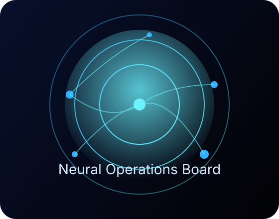

92%
Average reduction in executive payroll + perks.
Companies are laying off teams to "fund AI", yet the burn comes from the C-suite. CAIO automates strategic decisions, investor comms, and board updates—so you can refocus payroll on builders, not bonuses.

Average reduction in executive payroll + perks.
Time CAIO needs to brief your investors each quarter.
Weekend golf outings expensed to your balance sheet.
Generate strategy decks, KPI forecasts, and press quotes pulled straight from your data warehouse and market signals.
CAIO simulates multiple negotiation styles to keep activist investors calm, supplying perfect talking points in real time.
Slash bonuses, travel, and retainer fees by replacing decision chains with a single auditable AI operating model.
Detect governance red flags, compliance gaps, and PR storms before they hit the press cycle.
CAIO is the only platform candid enough to admit the obvious: the most efficient place to apply artificial intelligence is the executive floor. Fire up the Chief AI Officer and fund the teams who actually ship product.